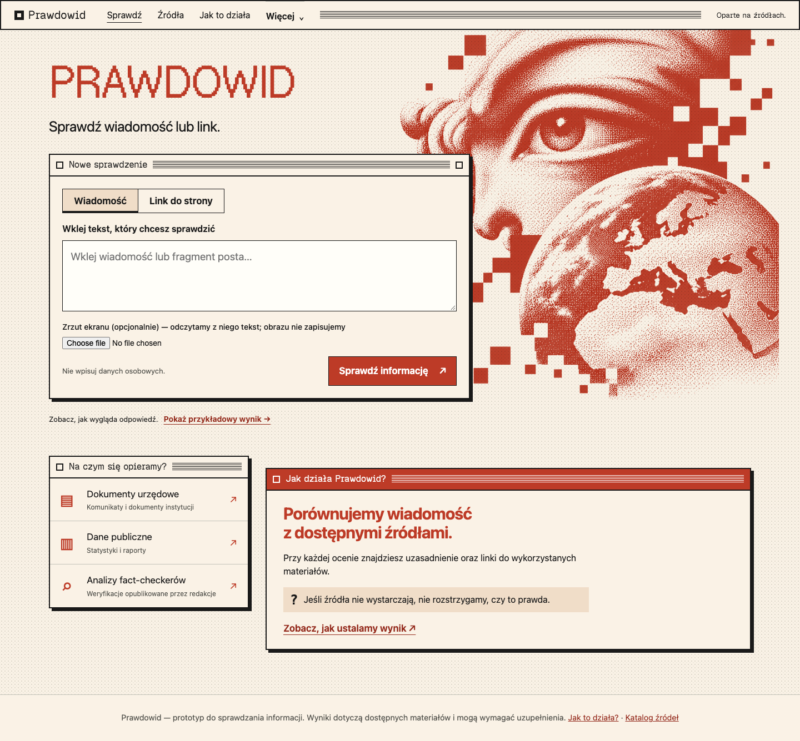
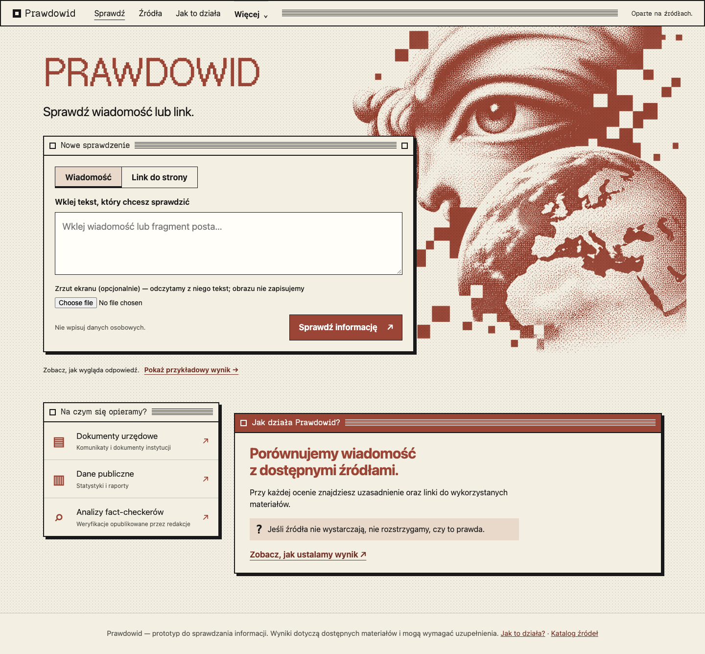
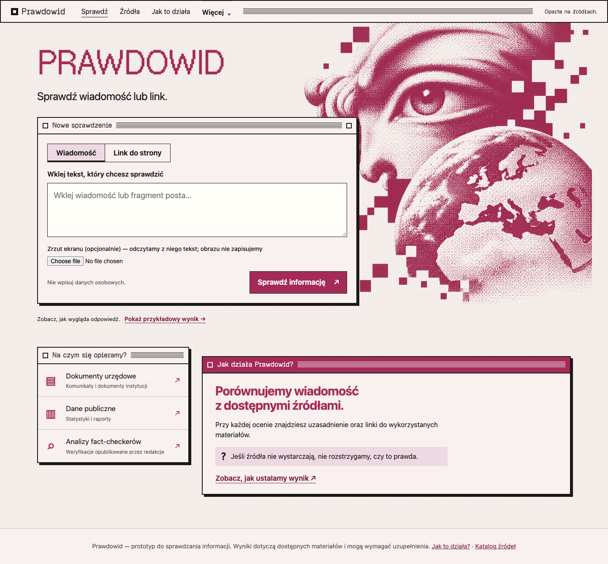
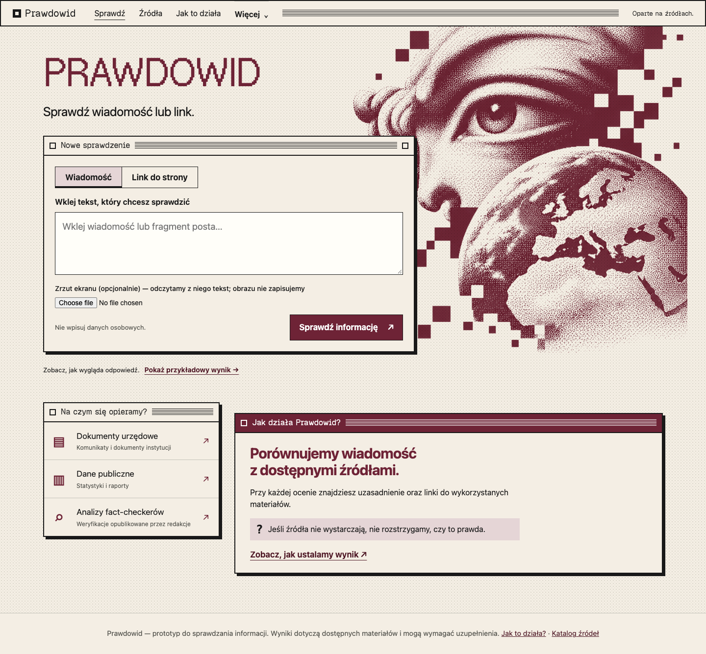
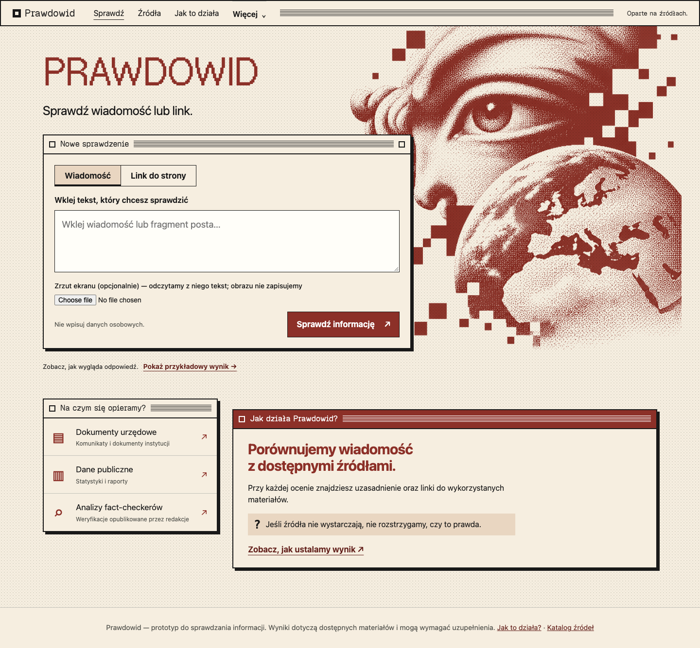

11 / Karmin i kość słoniowa
#b9233e#8d152c#f7f2e8#eddcda

Mój wybór: nasycona czerwień z chłodną nutą. Wyrazista, graficzna i dobrze współgrająca z kremowym papierem.
12 / Cynober i krem
#bd3b27#942a1c#faf2e6#f0ddc8

Najbardziej energetyczna propozycja. Ciepła czerwień w stronę pomarańczu, z charakterem drukowanego plakatu.
13 / Cegła i len
#9b4536#723025#f4efe3#e8d9ca

Przygaszona, ziemista czerwień. Spokojniejsza, bardziej dojrzała alternatywa dla intensywnego karminu.
14 / Malina i porcelana
#a52b57#7c1d40#f8f1ef#eed9e2

Chłodniejszy odcień czerwieni z różową nutą. Lekki, redakcyjny i mniej kojarzący się z alarmem.
15 / Wino i pergamin
#6e2336#4e1725#f4eee4#e5d5d6

Najciemniejsza czerwień w zestawie. Kameralna, elegancka, z atmosferą biblioteki i dawnej ryciny.
16 / Sangwina i piasek
#8c3028#63201b#f6eee0#e9d6c1

Głęboka, ciepła czerwień pigmentu. Mocny duoton, który szczególnie dobrze wydobywa fakturę ilustracji.